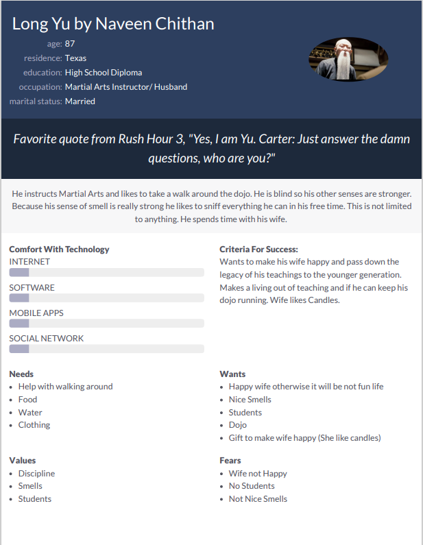

Problem Statement: Candle Customization
The users are frustrated because of not finding the perfect scent, shape, and style for their specific needs. People are tired of going to the stores and especially during this pandemic don’t want to be around people or cannot take off their masks to smell the perfect candle for them. As a result, our solution should provide users a way to easily create the perfect candle for them and at risk free during the pandemic.
Affinity Diagram: Candle Customization
Our group and I worked together to brainstorm different ideas about the Candle Customization.
Personna: Long Yu
A personna of a interesting Candle app user.
Storyboard for Long Yu
This is the Storyboard for Long Yu's Story and how he used the apps features.
Sketches

Rough ideas of how the application may looks like.
Paper Prototype
A Paper Walkthrough of the path in the application.
Hi-Fi Prototype
A High Fidelity Walkthrough of the path in the application. Has interactivity and nice backgrounds.
Hi-Fi Presentation
A High Fidelity Walkthrough and Presentation of the application. One of the group members walks through the prototype.